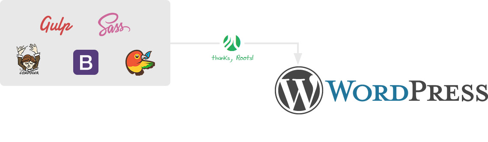

<!DOCTYPE html><html><head><meta charset=UTF-8 /><meta content="IE=edge,chrome=1" http-equiv=X-UA-Compatible /><meta content="width=device-width" name=viewport /><script>var host = "hellojason.net";
if ((host == window.location.host) && (window.location.protocol != "https:"))
  window.location.protocol = "https";</script><meta content="index,follow" name=robots /><link href="../../apple-touch-icon.png?v=Gvm449pRYq" rel=apple-touch-icon sizes=180x180 /><link href="../../favicon-32x32.png?v=Gvm449pRYq" rel=icon sizes=32x32 type="image/png"/><link href="../../favicon-16x16.png?v=Gvm449pRYq" rel=icon sizes=16x16 type="image/png"/><link href="/site.webmanifest?v=Gvm449pRYq" rel=manifest /><link color="#a432f4" href="../../safari-pinned-tab.svg?v=Gvm449pRYq" rel=mask-icon /><link href="../../favicon.ico?v=Gvm449pRYq" rel="shortcut icon"/><meta content="#a432f4" name=msapplication-TileColor /><meta content="#ffffff" name=theme-color /> <title>Hello Jason / Developing WordPress themes on a modern web stack</title><meta content="Thanks to the Roots team, WordPress projects finally match my development workflow." name=description /><link href="../../assets/stylesheets/site-fa3f21a6.css" rel=stylesheet /><link href="https://hellojason.net//blog/developing-wordpress-themes-on-a-modern-web-stack/" rel=canonical /><script>(function(i,s,o,g,r,a,m){i['GoogleAnalyticsObject']=r;i[r]=i[r]||function(){
(i[r].q=i[r].q||[]).push(arguments)},i[r].l=1*new Date();a=s.createElement(o),
m=s.getElementsByTagName(o)[0];a.async=1;a.src=g;m.parentNode.insertBefore(a,m)
})(window,document,'script','//www.google-analytics.com/analytics.js','ga');

ga('create', 'UA-48926813-1', 'auto');
ga('send', 'pageview');
ga('set', 'anonymizeIp', true);</script></head><body class="blog blog_developing-wordpress-themes-on-a-modern-web-stack blog_developing-wordpress-themes-on-a-modern-web-stack_index"></body><header class=banner role=banner><div id=primary-navigation role=navigation><div class=navbar-header><a class=logo href="/" title="Hello Jason Portfolio"><svg id=hellojason-logo xmlns="http://www.w3.org/2000/svg" width="0.56in" height="0.56in" viewBox="0 0 40.6 40.6"><defs><style>.cls-1{fill:#fbac2d;}</style></defs><title>hello-jason-logo</title><path class=cls-1 d="M9.3,13.1a4.11,4.11,0,0,1,2.8-.7H29.9a4.42,4.42,0,0,1,2.9.7,3.39,3.39,0,0,1,.8,2.5v0.5H28.4A1.43,1.43,0,0,0,27,17.5v0.9q3.75,0,4.8.9c0.7,0.6.9,2.9,0.9,2.9a28.1,28.1,0,0,1,.1,2.9V29a1.43,1.43,0,0,1-1.4,1.4h-8A1.43,1.43,0,0,1,22,29V28.1c0-1.9.2-3.1,0.7-3.6a3.37,3.37,0,0,1,1.7-.6,1.42,1.42,0,0,0,1.4-1.2,1.33,1.33,0,0,0-1.4-1.1H16.9A1.43,1.43,0,0,0,15.5,23v0.7c1.6,0,2.7.2,3.2,0.7a5.14,5.14,0,0,1,.6,2.3,23.48,23.48,0,0,1,.1,2.6A1.33,1.33,0,0,1,18,30.4H11A1.43,1.43,0,0,1,9.6,29V23.5c0-2.2.3-3.5,0.8-4.1a4.15,4.15,0,0,1,1.8-.7,15.26,15.26,0,0,1,1.8-.1,1.23,1.23,0,0,0,.4-1.2A1.33,1.33,0,0,0,13,16.2H8.5V15.5a2.92,2.92,0,0,1,.8-2.4" transform="translate(-0.7 -0.7)"/><path class=cls-1 d="M21,3.4A17.6,17.6,0,1,1,3.4,21,17.63,17.63,0,0,1,21,3.4m0-2.7A20.3,20.3,0,1,0,41.3,21,20.31,20.31,0,0,0,21,.7h0Z" transform="translate(-0.7 -0.7)"/></svg><span class=tagline>Hello, I'm Jason.</span></a></div><div id=primary-container><ul class=nav><li class=nav-item-blog><a href='/'>Blog</a></li><li class=nav-item-projects><a href='/projects/'>Projects</a></li><li class=nav-item-about><a href='/about/'>About</a></li></ul></div></div><div class=container><h1 class=title>Developing WordPress themes on a modern web stack</h1></div><svg class=icon-arrow-downright xmlns="http://www.w3.org/2000/svg" width="8.4" height="8.5" viewBox="0 0 8.4 8.5"><title>icon-arrow-downright</title><path d="M2.3,8.5,0,6.1H4.5L0,1.6,1.6,0,6.1,4.5V0L8.4,2.3V8.5Z"/></svg></header></html><article id=article-single role=main><time class=time datetime="2015-07-12 21:13:00 -0500" pubdate=pubdate>Published July 12, 2015</time><hr/><h2>Ignorance is not bliss</h2> <p>I get embarrassed when looking back at my early WordPress sites; a standard self-analysis for any developer who sees his code from 7 years ago. Sure, they all worked and the clients were happy (which is what really matters), but they were a maintainability nightmare that got worse with each new project. Plugins were updated in production (sometimes breaking sites), markup and stylesheets were not cohesive across projects, and nothing was minified or optimized; combine this with all the typical nuances of building WordPress themes, and you have yourself a stressful situation. I was the only developer and maintainer on those projects, plus I didn’t know any better, so things stayed this way for a while. Ignorance is not bliss in this case, but I still had happy clients while making money and continuing to learn.</p> <h2>Dev stack changes</h2> <p>But then, more advanced developers joined the team; guys with backgrounds in Ruby on Rails and Nodejs, introducing me to HTML templating, CSS preprocessors, and task runners. These tools are superb! <a href="http://hellojason.net/blog/how-bootstrap-helps-my-professional-workflow/">We agreed to use Bootstrap</a> as our front-end framework, made git version control a standard for every project, etc. These changes were great, but it quickly became apparent that our WordPress sites were causing headaches, so I explored some options.</p> <h2>New tools for WordPress development</h2> <p>Thankfully, a lot has changed in the WordPress developer community. Specifically, the fantastic team behind <a href="https://roots.io">Roots</a> is dragging WordPress into sane development land by bolting on modern web stack tools. Their projects offer solutions for my pain points when dealing with WordPress, and they are broken down into 3 spaces:</p> <h3>Bedrock</h3> <p>Bedrock is a modern WordPress stack that gets you started with the best development tools, practices, and project structure.</p> <ul> <li>Logical directory structure for easier version control with <a href="https://roots.io/bedrock/">Bedrock</a></li> <li>WordPress core and plugin management with <a href="https://getcomposer.org/">Composer</a></li> <li>Development, staging, and production environment-specific configurations</li> <li>One line cli deploys with <a href="http://capistranorb.com/">capistrano</a></li> </ul> <h3>Sage</h3> <p>Sage is a WordPress starter theme based on HTML5 Boilerplate, gulp, Bower, and Bootstrap, that will help you make better themes.</p> <ul> <li>Bootstrap-opinionated starter theme with <a href="https://roots.io/sage/">Sage</a> (or <a href="https://github.com/schikulski/gromf">Gromf</a>, a 3<sup>rd</sup> party fork of Sage for those who prefer Foundation)</li> <li>Theme dependency management with <a href="http://bower.io/">Bower</a></li> <li><a href="http://gulpjs.com/">Gulp</a> tasks, bringing CSS generation, image compression, linting, file watching, BrowserSync, autoprefixer, yadda, yadda</li> </ul> <h3>Trellis</h3> <p>Trellis is a set of Ansible playbooks to automatically configure servers and deploy WordPress sites. While Trellis looks great, I don&rsquo;t have the problem that it solves (yet), so I have not incorporated it into my workflow.</p> <h2>Thanks, Roots</h2> <p>Our legacy sites were migrated into the Bedrock stack over time, and all newer sites are built onto Sage. We can now tie WordPress core and plugin updates to git commits, deploy over the command line, and optimize assets for production.</p> <p>Roots has been monumental in the way I approach and maintain WordPress projects. It brings all the tools I&rsquo;m already using in other frameworks, and it has brought efficient consistency to all the WordPress projects I help create and maintain at my job.</p> <p>When I combine the Roots stack with the glorious <a href="http://www.advancedcustomfields.com/">Advanced Custom Fields</a> plugin, I can build a website that respects design mockups and that non-tech-savy clients can manage, and that&rsquo;s what it&rsquo;s all about.</p> <p>Thank you, <a href="https://roots.io/about/">Roots team</a>.</p> <hr/><a class=back-to-articles href="/">&#8617; All articles</a><br/><br/></article><footer id=footer></footer><script src="//assets.codepen.io/assets/embed/ei.js" async=true></script>